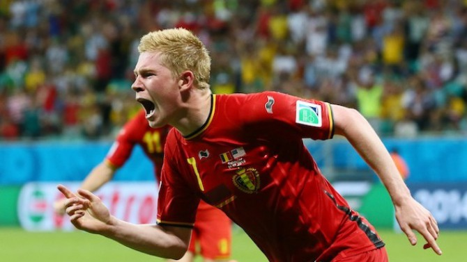
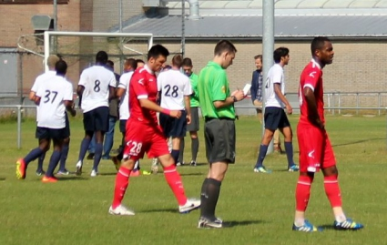

БЕЛГИЯ ОЦЕЛЯ В СПИРАЩА ДЪХА ДРАМА СРЕЩУ ВОИНИТЕ НА КЛИНСМАН

Белгия елиминира САЩ с 2:1 след продължения и продължава победния си ход на Мондиал 2014.
Последният осминафинал в турнира предложи на зрителите истинска драма, в която всички голове
паднаха в допълнителните 30 минути. В герои за "червените дяволи" на "Арена Фонте Нова" в Салвадор
се превърнаха Кевин де Брюин и резервата Ромелу Лукаку, които отбелязаха попаденията за тима на Марк Вилмотс.
"Янките", водени от Юрген Клинсман, за пореден път показаха характер и не се предадоха до последно.
Младокът Джулиан Грийн върна един гол в началото на второто продължение, но Белгия устиска победата
и на четвъртфиналите ще мери сили с Аржентина на Лионел Меси.
Сензация! 144-ият в света изхвърли Надал от "Уимбълдън"
Световният №1 и двукратен шампион Рафаел Надал претърпя шокираща загуба от 144-ия в
света Ник Киргиос (Австралия) на 1/8-финалите на "Уимбълдън". Участващият с "уайлд кард"
19-годишен австралиец спечели със 7:6 (5), 5:7, 7:6 (5), 6:3. Киргиос, който никога досега
не беше прескачал втория кръг на турнир от "Големия шлем", за първи път участва на "Уимбълдън"
тази година. Във втория кръг той спаси 9 мачбола срещу французина Ришар Гаске и го елиминира
след 10:8 в петия сет. Деветкратният шампион на "Ролан Гарос" Надал пък в последните три години
не успява да достигне до фазата на 1/4-финалите на "The Championships". През 2012 той отпадна във
втория кръг след поражение от чеха Лукаш Росол, когото победи в четири сета във втория кръг тази
година. През 2013 година пък испанецът бе елиминиран от белгиеца Стив Дарсис още в първия кръг.
Освен двете си титли в "Ол Инглънд Клъб" (2008, 2010), 28-годишният Надал има и три загубени финала
в Лондон (2006, 2007, 2011).
Втородивизионен белгийски тим нанесе първа загуба на ЦСКА

ЦСКА загуби с 0:1 от втородивизионния белгийски Роял Уайт Стар и по този начин футболистите
на Стойчо Младенов инкасираха първо поражение в лятната си подготовка. Единственото попадение
вкара Лемперюр, който се разписа в 78-та минута. За армейците като титуляри стартираха каращите
проби Дансо и Супусера, а за белгийците през втората част се появи игралият в Левски Базил де Карвальо.
Червените започнаха по-активно в началото на мача и в 12-та минута можеха да открият резултата.
Тогава Венци Василев стреля с глава след центриране от корнер, но стражът на белгийците Минсарт изби в корнер.
Обиколка на "Силвърстоун" с Люис Хамилтън
Тази година на стартовата решетка във Ф1 има трима пилоти, за които Гран при на Великобритания
е едно от най-важните състезания - домашната надпревара на "Силвърстоун": Люис Хамилтън, Дженсън Бътън и
Макс Чилтън. С най-голям шанс за победата от тях е пилотът на Мерцедес Хамилтън, който е и втори в
класирането при пилотите след съотборника си Нико Розберг. Хамилтън тренира в симулатора на тима в
Бракли и ни показва какво е да направиш обиколка на трасето във Великобритания. Това е деветият епизод
от поредицата Race Preview, която отборът ни дава преди всяко състезание.
Феновете на Формула 1 ще оплакнат очите в петък
Феновете на Формула 1 тръпнат в очакване след вчерашната новина, че тест-пилотът на Уилямс
Сузи Волф ще замени Валтери Ботас в първата свободна тренировка преди Гран При на Великобритания.
31-годишната шотландка е първата жена, която от 1992 година насам ще вземе участие в една от
официалните сесии на Формула 1. Състезанието за Голямата награда на Великобритания е този уикенд.